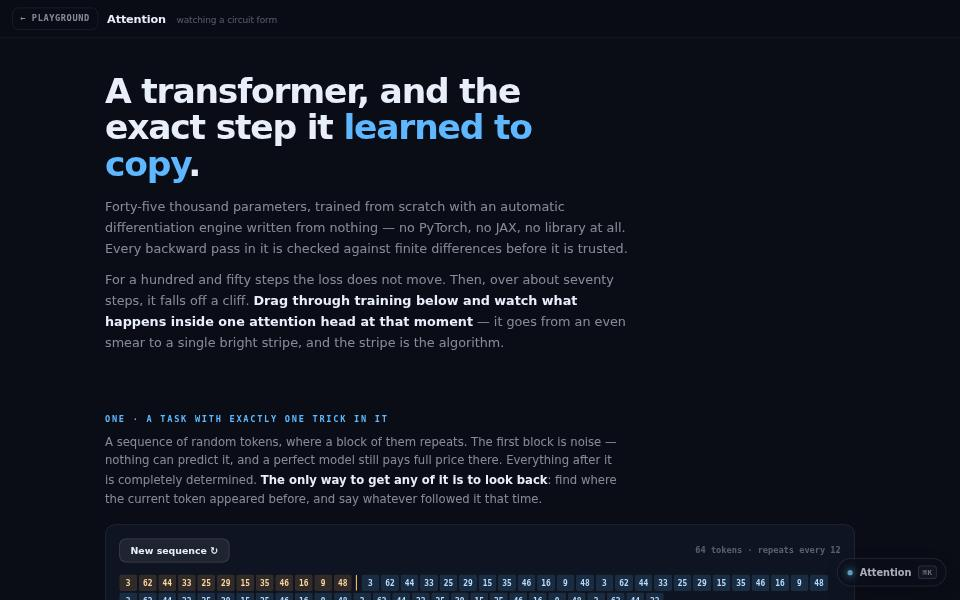

machine learning · about 6 min · The Observatory Reach
Attention
A transformer trained from scratch with hand-written backpropagation, and the exact step it learned to copy.

The problem
Everyone talks about attention heads; almost nobody has watched one form.
What it does
- A transformer trained from scratch, in the page
- Every backward pass hand-written and checked against finite differences
- Drag through training and watch an induction head form
The most interesting decision
The gradient checks came first
A wrong backward pass does not throw; the model just trains slightly worse and there is no symptom to chase. So every backward pass was checked against central finite differences before anything was built on top of it.
Built with
- Reverse-mode autograd, hand-written
- Attention-only transformer
- Adam + cosine schedule
- Canvas 2D
Evidence
Drag through training and the induction head appears at the step the loss falls off a cliff. Read its tests
Its world
An observatory under a sky of tokens, joined by the arcs one attention head learns to draw.